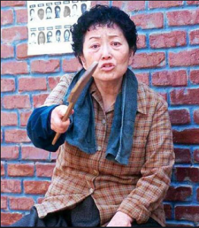
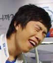

주의!) 이 문서는 절대로 김민T에 대한 문서가 아님을 밝힙니다. 아니 뭐 그렇다고 ^^7

이 문서는 말빨이 겁나 쎈 사람을 다룹니다.
되도록 이 문서에서 다루는 사람의 심기를 거스르는 일이 없어야 합니다.
말 한 마디 잘못 하면 한 순간에 가버리는 수가 있습니다.
이미 가버린 사람들이 한 둘이 아닙니다
괜히 깝치다가 피해 보는 일이 없기를 바랍니다.

이 문서는 겜잘알을 다룹니다.
남들은 모르는 특별한 지식을 가지고 있습니다.
어쩌면 당신이 하는 게임에 관해서 알고 있을 지도 모릅니다.